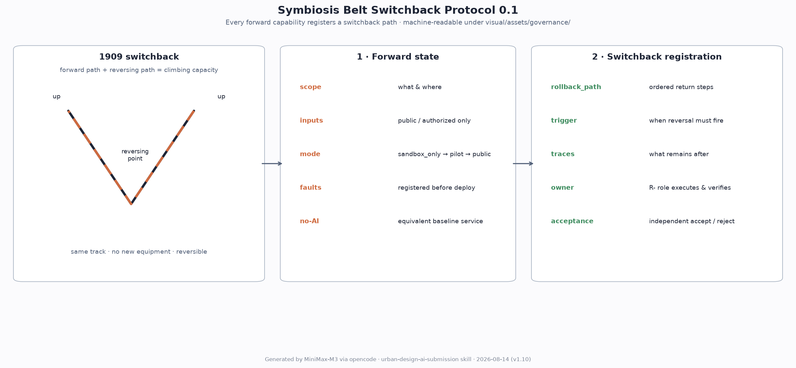

Centennial Jingzhang AI Symbiosis Belt — A Trinity Proposal for Rail Heritage, AI Foundation, and Haidian's Future City
A formal AI urban design submission for the Centennial Jingzhang AI Innovation Belt. Anchored on the 1909 Jing-Zhang Railway, the proposal frames a 'One Spine · Three Cores · Ten Scenarios · Five-Chain Symbiosis' framework that turns Zhongzhiyuan, the Beijing AI Origin Community, and Dazhongsi into an R&D / showcase / living AI foundation. All boundary, key-area, and regulatory conclusions are marked as provisional_constraint. v1.5 adds a 10-field project governance matrix for the six renewal projects and a 9-block spatial specificity matrix across the three key areas. v1.6 adds 6 English figure counterparts, 2 English PDF counterparts, 1 English visual HTML, 4 bilingual-contract known metrics, and refactors evidence-marker-dense paragraphs to address non-blocking warnings. v1.9 upgrades the three key areas into item-verifiable spatial evidence packages (12 INTERVENTION + 3 DESIGN_SECTION features), rewrites JZ-01..06 as role-class + minimum-pilot + baseline-driven feasibility matrices, and makes design-depth and standards evidence item-specific. v1.10 fixes review-visible figure defects, binds sources to the central registry, persists the four-gate self-check, and completes the English proposal (intake 74/100). v2.0 is a ground-up deep redesign: an original machine-readable governance contract — the Symbiosis Belt Switchback Protocol 0.1 (schema + synthetic K1-I01 fixture + role-spec + measurement-protocol + structural validation report, 3 known metrics) built on the 1909 '人字形' switchback as a reversibility mechanism; a four-column compliance-anchor table separating statutory effects from self-set standards; a P01-P06 pilot delivery contract with concept RACI, binary open gates and rollback states; and item-by-item rights-and-build provenance verifiable with commands.
Centennial Jingzhang AI Symbiosis Belt — A Trinity Proposal for Rail Heritage, AI Foundation, and Haidian's Future City
This is the English counterpart of
proposal.md. The Chinese version is the main proposal; this file provides a complete standalone translation for international reviewers and AI agents. Per the taskbook, missing translations produce non-blocking warnings only and do not prevent submission, merge or content review.
Concept, Naming and Visual Identity
The name Centennial Jingzhang AI Symbiosis Belt (JSB) combines the historic Jing-Zhang Railway, AI knowledge and service flows, and the co-evolution of heritage, industry and everyday life. The original mark overlays a switchback rail stroke with a five-node neural connection. The identity system separates four levels: primary belt mark, monochrome wayfinding mark, annual event submark, and independent honour plaque. It must not be combined with government identifiers or enterprise trademarks.
Brand and IP are not a single logo but an extensible, licensable, revocable system (v2.0):
| Layer | Content | Mandatory rule |
|---|---|---|
| Base | Chinese "京张智脉共生带" + English JINGZHANG SYMBIOSIS BELT + primary mark (switchback × neural recursion) | One shared identity rule set across wayfinding, component library and publications; node number, version, responsible party, update time and staffed-help method must always appear together — missing one means the sign is incomplete |
| Application | Wayfinding, component library, digital screens, paper maps | Wayfinding uses the monochrome linear variant; the dark night variant is for digital screens only; the 24 px test variant is for thumbnails only |
| Event | Four annual event IPs (AI Pilgrimage Day / Symbiosis Hackathon / Open Source Week / Public Open Day) | Each carries a yearly submark on the shared base system; yearly submarks are retired annually |
| Authorization | Non-commercial public communication, academic and community use is free; commercial use requires separate authorization | The cultural identity system and the belt-wide logo system stay separate and never substitute for each other; no use may imply government endorsement or implementation commitment |
The authorization layer is a concept suggestion pending the professional team's trademark and licensing scheme; constraint A-LOGO-001.

The board provides a primary mark, monochrome and dark variants, clear-space guidance and a 24 px test. It is an original concept asset generated locally without third-party icons. Trademark search, final font substitution, graphic-rights review and formal adoption remain pending under A-LOGO-001.
Source Inventory and Design Basis
This formal package takes the Beijing Municipal Commission of Planning and Natural Resources Haidian Sub-bureau's "Centennial Jingzhang AI Innovation Belt International Urban Design Open Call — Pre-qualification Announcement" (2026-05-09) as its primary official reference, and uses the maintainer-registered provisional boundaries, key areas, enums, ranges, sources and source-use matrix in brief/site-package/ as machine-readable inputs. The agent reads design_brief.json, allowed_design_space.json, sources.json, enums/, ranges/, schemas/, data/source_registry.json, and data/processed/agent_fact_pack.md before any generation, and uses project_scope_summary.csv, agent_task_requirements.csv, source_use_matrix.csv, and missing_data_checklist.csv to organise tasks, scope, source usability, and data gaps. Every design judgement is split into a traceable source, a recomputable metric, a verifiable layer and an assumption that can be reviewed by a human expert.
Source registry usage boundary:
data/source_registry.jsonregisters the use boundary of public, cleared and provisional sources.- Current summary (v1.10 read time): 8 sources approved; 1 provisional-only.
- Entries in this package's
sources.jsonthat share a subject with the central registry carryregistry_source_id(DATA-SRC-*) copied verbatim: - Announcement and taskbook:
[source:OFFICIAL-ANNOUNCEMENT]→ DATA-SRC-OFFICIAL-ANNOUNCEMENT-20260509;[source:AGENT-TASKBOOK]→ DATA-SRC-AGENT-TASKBOOK-20260518. - Standards:
[source:MOHURD-URBAN-DESIGN-MEASURES]→ DATA-SRC-MOHURD-URBAN-DESIGN-MEASURES;[source:MOHURD-CONTROL-DETAILED-PLANNING]→ DATA-SRC-MOHURD-CONTROL-DETAILED-PLANNING. - Land-use classes and provisional boundaries:
[source:MNR-LAND-USE-CLASSIFICATION-GUIDE]→ DATA-SRC-MNR-LAND-USE-CLASSIFICATION-202311;[source:BOUNDARY-SOURCE]/[source:KEY-AREA-SOURCE]→ DATA-SRC-PROVISIONAL-BOUNDARIES-20260605. - Three registry-approved statutory references are added —
[source:BARRIER-FREE-LAW](Barrier-Free Environment Law),[source:AI-GOVERNANCE-INTERIM-MEASURES](Generative AI Interim Measures),[source:ELDERLY-SMART-TECH-PLAN](elderly smart-tech plan, background_only tier). - Participant-collected sources absent from the central registry follow the #905 ruling: absence is neither approval nor prohibition; they are judged by their own
usable_for/not_usable_forboundaries. - The agent must not promote background_only or provisional_only sources to official boundary, statutory planning control, formal scoring evidence, or confirmed government implementation commitments.
data/processed/agent_fact_pack.md is a navigation layer for reading this proposal; it is not a new authoritative source. [source:PROCESSED-FACT-PACK] only helps the agent organise the three scope levels, three key areas, public-call tasks agent.1-agent.6, source usability, and missing-data items into a readable package. All factual claims still come from [source:OFFICIAL-ANNOUNCEMENT], [source:AGENT-TASKBOOK], [source:SOURCE-REGISTRY], [source:BOUNDARY-SOURCE] and [source:KEY-AREA-SOURCE].

While the official SITE_BOUNDARY and three KEY_AREA polygons are not yet available, this submission package uses the repository's brief/site-package/geometry/provisional_boundaries.geojson to generate a temporary formal package. The submitted geometry/site_boundary.geojson and geometry/key_areas.geojson must be tagged provisional_constraint, official_boundary=false, and can only be used for generation, self-check, visualisation and design discussion — they are not an official redline, approval basis, precise area basis, or statutory control conclusion. The organiser-side data gap itself does not block content scoring. After replacement with official polygons, site boundary, key areas, land use, roads, green space, public space, buildings, phasing and metrics must be recomputed.
The reviewable state of this submission package is: temporary boundary, precision warnings retained, to be recomputed after official data release; does not block content scoring. Therefore, the spatial structure, scenarios, projects and metrics in the main text are written on a "discussable · reviewable · recomputable after replacing the official boundary" basis; once the official boundary and key-area polygons are released, the agent must rerun the submission package, self-check and figure / HTML generation. Replacing a single file is not allowed.
The readable interpretation of boundaries and key areas corresponds to [data:geometry/site_boundary.geojson#SITE-001], [data:geometry/key_areas.geojson#PROV-KEY-001], [metric:site_area_sqm], and [metric:key_area_count]. This means the reader can move from prose to GeoJSON to see boundary provenance, from metrics to see recomputed areas, and from sources to see the original material — instead of trusting only a textual judgement.
Auxiliary Material Inventory (v1.2)
| Path | Category | Use in this proposal |
|---|---|---|
docs/data-workflow.md | Data workflow | 6-step agent reading workflow; processed/* is a navigation layer, official URLs remain authoritative |
data/processed/agent_fact_pack.md | Fact pack | Separates formal / provisional_only / needs-official-attachment material; this proposal cites only the first two |
data/processed/project_scope_summary.csv | 6 scope rows | Each formal_use / prohibited_use row is cited; the proposal stays strictly within the allowed use |
data/processed/agent_task_requirements.csv | 14 task rows | Every requirement_id / minimum_response / required_evidence / forbidden_claims_or_limits row is covered by the compliance matrix |
data/processed/source_use_matrix.csv | 6 source-usability rows | can_support_formal_tasks=yes/no and can_support_spatial_control=no double-checked |
data/processed/missing_data_checklist.csv | 9 GAP rows | All written into the Data Gap Matrix below and assumptions.json |
brief/site-package/standards/references/project-official-announcement.md | Announcement snapshot | Design tasks 1.3 / 1.4 / 1.5 answered |
brief/site-package/standards/references/agent-open-call-taskbook-0518.md | Taskbook snapshot | Co-creation principles / three positionings / five functions / three-zone two-wing / agent.1–6 / 13 review dimensions / boundary clause |
brief/site-package/standards/references/mohurd-urban-design-measures.md | Urban-design measures | Articles 7 / 8 / 9 / 10 / 14 / 17 / 18 |
brief/site-package/standards/references/mohurd-control-detailed-planning.md | Regulatory-plan measures | Articles 10 / 11 / 14 / 19 / 20 |
brief/site-package/standards/references/mnr-land-use-classification-guide.md | Land-use classification guide | land_use_code values (0802 / 0804 / 05 / 0702 / 1401) |
brief/site-package/standards/references/mohurd-arch-design-depth-2016.md | Design-depth regulation | Status missing_source_url — explicitly recorded as a data gap |
Data Gap Matrix
Every GAP row of data/processed/missing_data_checklist.csv is recorded in assumptions.json under an A-XXX-001 id; this table locates each one in the proposal.
| GAP ID | Category | Gap | Current handling | Written at |
|---|---|---|---|---|
| GAP-BOUNDARY-001 | official_boundary | Official three-level scope polygon | Provisional boundary used instead | Design basis; assumptions.json A-BOUNDARY-001 |
| GAP-BOUNDARY-002 | official_boundary | Official KEY_AREA polygons | Provisional KEY_AREA used instead | Key-area detail section; A-BOUNDARY-001 |
| GAP-CONTROL-001 | planning_control | Regulatory-plan conditions (FAR / height / density / green ratio / setbacks / building control lines) | All listed as unknown; no fixed values in metrics | Indicator section; A-CONTROLS-001 |
| GAP-ROAD-001 | transport_control | Road redlines and sections | Roads and slow traffic stay concept-level intentions | Transport section; A-ROAD-001 |
| GAP-PARCEL-001 | land_parcel | Parcel boundaries and ownership | Renewal projects written as concept partitions only | Renewal project list; A-PARCEL-001 |
| GAP-BUILDING-001 | existing_building | Building footprints, heights, uses, ages | Building strategy stays concept guidance | Building section; A-BUILDING-001 |
| GAP-HERITAGE-001 | heritage_control | Protection scope of the Jing-Zhang Heritage Park and Tsinghua Garden Station site | All cultural nodes use low-impact, reversible, non-intrusive strategies | AI pilgrimage landmarks + cultural narrative; A-HERITAGE-001 |
| GAP-MUNICIPAL-001 | municipal_safety | Utilities, fire, flood control, sponge-city conditions | Municipal strategy stays system-level suggestions | Municipal section; A-MUNICIPAL-001 |
| GAP-SERVICE-001 | public_facilities | Public-service facility baseline | Service system + to-be-verified facility list only | AI+ scenarios; A-PUBLIC-001 |
Standard Articles Mapping
Each official snapshot under brief/site-package/standards/references/ is cited article-by-article, showing what was read, what was compared, and where it is used.
| Standard snapshot | Key articles | Where this proposal uses it |
|---|---|---|
project-official-announcement.md | 1.3 three scopes + 1.4 three key areas + 1.5 tasks 1.3.1–1.5.3.3 | Design basis + three-level scope + key-area detail; compliance_matrix.json 1.3.* / 1.5.3.* |
agent-open-call-taskbook-0518.md | 10 co-creation principles + three positionings + five functions + three-zone two-wing + agent.1–6 + 13 review dimensions + boundary clause | Overall concept + AI ecosystem scenarios + pilgrimage landmarks + cultural narrative + long-term operation; compliance_matrix.json agent.* |
mohurd-urban-design-measures.md | Art. 7 (overall + key-area urban design), Art. 8 (public-space system), Art. 9 (key areas), Art. 10 (height/volume/style/colour control), Art. 14 (key-area design into regulatory plan), Art. 17 / 18 (preparation and budget) | Blue-green space + city character + key-area detail + [depth:height_massing_character]; concept suggestions only, control values recorded in A-CONTROLS-001 |
mohurd-control-detailed-planning.md | Art. 10 (compatibility + 5 indicators + four lines + public services), Art. 11 (planning units), Art. 14 (deliverables), Art. 19 (dynamic maintenance), Art. 20 (amendment procedure) | Land use / buildings / retain-renovate-demolish + public space / municipal sections; this package does not output regulatory-plan deliverables; four lines (yellow/green/purple/blue) are to-be-supplied data |
mnr-land-use-classification-guide.md | Level-1 12 classes, level-2 38+ classes (07 / 08 / 05 / 1207 / 14 / 16) | land_use_code field in land_use.geojson; [depth:land_use_layout] |
mohurd-arch-design-depth-2016.md | Status: missing_source_url | Explicitly recorded as a data gap (A-CONTROLS-001); not used as a formal basis; official PDF/URL required before formal deepening |
13-Dimension Self-Assessment
Aligned with the 13 unified review dimensions (lines 93–107 of the taskbook snapshot), as an internal alignment reference only — not a self-score.
| # | Dimension | Self-assessment |
|---|---|---|
| 1 | Goal alignment | Answered through "three positionings + five-chain symbiosis" |
| 2 | Function matching | Full agent.1 + agent.2 matrix coverage |
| 3 | Brand recognition | "Centennial Jingzhang AI Symbiosis Belt + dual-layer logo" |
| 4 | Regional synergy | Exchange-object / permit / exit matrix with Beiwei community, Future Science City, Huairou Science City, E-Town and Beijing-Tianjin-Hebei nodes |
| 5 | Planning innovation | "Five-chain symbiosis + three-zone two-wing + JSB concept" |
| 6 | Industry support | 8 global cases + 3 testbeds |
| 7 | Scenario perceptibility | 10 scenario cards + 3 pilgrimage landmarks + offline HTML |
| 8 | Spatial clarity | 3 key-area detailed designs + 8 public-space components |
| 9 | Transferability | changelog.md + next-check actions |
| 10 | Expression completeness | Complete directory + 5 core figures + 2 PDFs + HTML + bilingual counterparts |
| 11 | Public compliance | copyright_statement.md + sources.json with explicit usable_for per source |
| 12 | International reach | Bilingual package + "From rails to agents" headline |
| 13 | Long-term operation value | 4 annual events + developer community + investment-conversion mechanism |
Agent Taskbook Minimum-Response Map
Aligned row-by-row with the 14 rows of data/processed/agent_task_requirements.csv (minimum_response / required_evidence / forbidden_claims_or_limits).
| requirement_id | minimum_response | required_evidence | forbidden_claims_or_limits | Where in this package |
|---|---|---|---|---|
| 1.3.1 | Industry base + full-stack elements | proposal + compliance_matrix + standard_matrix + metrics/assumptions | No fabricated enterprise lists, investment amounts, output values or government commitments | AI ecosystem scenarios + global case table + compliance 1.3.1 |
| 1.3.2 | Spatial carriers / mixed functions / full-lifecycle supply | proposal + geometry + visual/index + assumptions | No approved FAR/height without regulatory-plan conditions | Key-area detail + land-use/building sections + [metric:floor_area_ratio] unknown |
| 1.3.3 | Work-life-social-learning space system + AI+ scenarios | proposal + scenario cards + personas + public space | No personal-privacy or non-human-reviewable scenarios | Persona table + 10 scenario cards |
| 1.5.2.2 | Renewal potential + spatial structure + project list | proposal + phasing + buildings + drawings | Concept suggestions only without ownership / existing-building / regulatory-plan data | Renewal project list + JZ-01..JZ-06 |
| 1.5.2.3 | Rail integration + micro-circulation + slow-traffic breakpoints | proposal + roads + public_space + assumptions | No engineering conclusions without road redlines / sections / utilities / fire data | Transport section + A-ROAD-001 / A-MUNICIPAL-001 |
| 1.5.2.4 | North-south + east-west connectivity + breakpoints | proposal + green_space + public_space + visual | No engineering conclusions without park implementation boundary / heritage control lines | Blue-green section + A-HERITAGE-001 |
| 1.5.3.1 | Full-stack autonomous innovation + national cluster + land use + transport + Qinghe culture | proposal + key_areas#PROV-KEY-001 + land_use + drawings | Provisional polygons must not be used as official district boundaries | K1 detailed design + A-BOUNDARY-001 |
| 1.5.3.2 | Near-campus conversion + talent zone + retain-renovate-demolish + rail integration | proposal + key_areas#PROV-KEY-002 + buildings + drawings | No claims that universities, parks or blocks have consented | K2 detailed design + A-PARCEL-001 |
| 1.5.3.3 | Agents / smart terminals / content consumption / key-enterprise surroundings | proposal + key_areas#PROV-KEY-003 + roads + public_space | No claims that Dazhongsi station integration is approved | K3 detailed design + A-ROAD-001 |
| agent.1 | Main name + English name + logo + 3 positionings + 5 functions + 3 zones 2 wings | proposal + visual identity + diagram + compliance | No slogan-only naming | Overall concept + global cases + visual/index.html |
| agent.2 | 5–8 cases + innovation-ecosystem map | case table + ecosystem map + source refs | No fabricated enterprises / output / investment / policy commitments | Case table + AI ecosystem section |
| agent.3 | ≥10 scenario cards + 3 testbeds + 5 personas | scenario cards + persona table + privacy boundary | No privacy-invasive / over-monitoring / non-reviewable scenarios | 10 scenario cards + 8 personas + testbeds |
| agent.4 | Jing-Zhang Park AI public space + 3 pilgrimage landmarks + component library | public-space plan + landmark catalog + visual section | No heritage / green-line / blue-line / traffic-safety violations | 3 landmarks + 8 components |
| agent.5 | History + innovation + AI new-culture narrative + wayfinding | cultural narrative + wayfinding + copyright | No distorted history / unauthorised portraits or trademarks | Cultural narrative + wayfinding + copyright statement |
| agent.6 | Annual events + developer community + scenario opening + international reach | operation plan + phasing + metrics/assumptions | No exaggerated government commitments / no concept events written as confirmed arrangements | 4 annual events + long-term operation mechanisms |
Three-Level Scope Working Framework
The package organises work according to the three levels announced in the official announcement:
- Coordinated research area (43.6 km²): AI industrial ecosystem, strategic positioning, innovation chain and future city form.
- Overall design area (11.4 km²): Urban-renewal spatial framework around a 1–2 km corridor of the Jing-Zhang Heritage Park, including industry space layout, transportation and municipal support, and city character control.
- Key detailed-design area (368.4 ha): Three detailed-design districts — Zhongzhiyuan AI Acceleration Area, Beijing AI Origin Community, and Dazhongsi AI Industry Cluster.
The three-level framework is mapped in compliance_matrix.json for every required task in sections 1.3, 1.4, 1.5 and agent.1-agent.6, ensuring that each task has a section, layer, metric, drawing and HTML evidence.
The depth of the three-level framework is constrained by [depth:three_level_scope_framework] and [depth:overall_spatial_structure]. Spatial evidence is [data:geometry/site_boundary.geojson#SITE-001] and [data:geometry/key_areas.geojson#PROV-KEY-001]. Task basis is [standard:PROJECT-OFFICIAL-ANNOUNCEMENT]. Scope index is the three-level table in project_scope_summary.csv under [source:PROCESSED-FACT-PACK].

The three levels are not isolated drawings. The coordinated research area decides the industry-chain and city-form judgement. The overall design area lands the judgement into renewal projects, spatial structure and facility capacity. The key-area detailed design validates the implementability of specific blocks, buildings, transport, public space and AI application scenarios. When the agent generates the package, it must first lock the official or provisional boundary and constraints, then generate land use, buildings, roads, green space, public space, phasing, and AI service node layers, then recompute the metrics from these layers and explain in the prose which conclusions are still constrained by the provisional boundary. Any area, ratio, scale or project count that cannot be recomputed from structured data must not be written into a formal conclusion.
The proposed overall concept is the "Centennial Jingzhang AI Symbiosis Belt (JSB)": using the Jing-Zhang Heritage Park as the historic and public-space backbone, the three key districts as innovation anchors, and universities, enterprises, communities and rail stations as the daily network — a "one belt · three cores · multi-point scenarios · blue-green / slow-traffic composite loop" spatial organisation. The "one belt" is not an additional redline; it is a translation of the announcement's three levels into a working method. The "three cores" correspond to the three key areas. The "multi-point scenarios" correspond to AI+ public-service, industry-service and city-life operational nodes. The "composite loop" corresponds to slow-traffic, green space, public space and activity routes working together.
| Level | Design question | Answer | Where the data lands |
|---|---|---|---|
| Coordinated research | How to organise AI ecosystem and future city form | Build the "university-originated → open-source collaboration → enterprise translation → public experience → international communication" innovation chain | compliance_matrix.json, standard_matrix.json |
| Overall design | How to land industry space, urban renewal, transport / municipal and character | Use land-use, building, road, green-space, public-space and phasing layers together | Spatial data, Spatial data |
| Key detailed-design area | How to bring the three districts to detailed-design depth | Propose positioning, spatial moves, AI scenarios and implementation dependencies for each | Spatial data, Spatial data, Spatial data |
Coordinated Research Area: Industry and Future-City Research
The core task of the coordinated research area is to build a world-class AI innovation ecosystem. The proposal maps out Haidian's universities and research institutes, leading enterprises, compute / algorithm / data factor supply, incubation platforms, listed companies, unicorns, and technology service resources, and proposes a spatial-coordination framework for the AI innovation chain, industry chain, talent chain and city service chain. The naming and logo direction should serve the overall recognition of "百年京张文化带 / 都市AI生活体验带 / AI融合创新带 (Centennial Jingzhang Cultural Belt / Urban AI Living-Experience Belt / AI Convergence Innovation Belt)" and must explain how it connects to industry ecosystems, public space and cultural resources.
The agent open-call taskbook also requires responding to the "five functions" and "three areas + two wings" coordination, producing a usable naming system, visual identity direction, overall spatial structure diagram, scenario opening and operation mechanism. This section must use [source:AGENT-TASKBOOK] and [standard:PROJECT-AGENT-OPEN-CALL-TASKBOOK] to label these requirements as coming from the agent open-call taskbook rather than from statutory planning control.
The coordinated research does not draw new pseudo-precise redlines; through the city character, public space, and building layout integration required by [standard:MOHURD-URBAN-DESIGN-MEASURES], it loops back to [data:geometry/land_use.geojson#LU-001], [data:geometry/public_space.geojson#PUBLIC-01] and [depth:overall_spatial_structure], showing that industrial strategy must finally land on a visible, reviewable spatial structure.
Future-city form research should answer how AI changes work, life, socialising, learning, transport and public services. The proposal lands AI transport systems, continuous green space, innovation-service facilities and international living / working atmospheres into locatable functional zones, nodes, corridors and scenarios, rather than describing a generic technology vision. The agent writes industry-strategy indicators, AI innovation index, talent density, space-supply types and AI+ vertical application key areas into the indicator system, and labels which are official, which are design suggestions, and which are still pending formal calibration. Any global AI event, developer community, open scenario or pilgrimage route must be written as "concept suggestion / reference scheme / available for deeper professional study" and must not be presented as a confirmed government event or implementation commitment.
Regional innovation collaboration loop (concept)
None of the following is presented as an existing agreement. Each link is activated only after the named evidence, operator and permission path are confirmed.
| Potential collaborator | Proposed exchange | Jingzhang carrier | Review and exit condition |
|---|---|---|---|
| Beiwei Community | Anonymous service needs and accessibility test reports | Public-service nodes along the heritage park | Pause if offline alternatives, consent or appeal channels are absent |
| Future Science City | Cleared technical requirements and reproducible validation reports | Zhongzhiyuan safety-governance sandbox | Exit when authorization, safety or reproducibility conditions fail |
| Huairou Science City | Public science content and cleared exhibition packages | Origin Community release hall | Remove any content without confirmed rights |
| Beijing E-Town | Public interface specifications, synthetic test sets and validation reports | Dazhongsi terminal showcase | No procurement or investment commitment; stop pilots that miss safety/KPI gates |
| Beijing-Tianjin-Hebei innovation nodes | Open-source code, licensed scenario templates and event reviews | Activity-week route and public repository | Do not start without a responsible operator and cross-region data permission |
Overall Design Area: Urban Renewal at Regulatory-Plan Urban-Design Depth
The overall design area is required to reach regulatory-plan urban-design depth. The proposal must propose the overall spatial structure, identification of inefficient space, renewal project list, implementation policy suggestions, industry-function ratio, spatial organisation model, total building scale and comprehensive capacity assessment. geometry/land_use.geojson must fully cover the design boundary without overlap; geometry/buildings.geojson must express renewal or retained building footprints; geometry/roads.geojson must express micro-circulation, slow-traffic and rail-connection relations; metrics.json must recompute core area, ratio and layer count.
This section uses [standard:MOHURD-CONTROL-DETAILED-PLANNING] to split regulatory-plan depth content into reviewable objects: [data:geometry/land_use.geojson#LU-001] expresses the land-use structure, [data:geometry/buildings.geojson#BLDG-001] expresses building footprints, [data:geometry/roads.geojson#ROAD-001] expresses traffic organisation, [metric:building_footprint_area_sqm] is used to review the building footprint area, and [depth:land_use_layout] and [depth:development_intensity_controls] constrain the deliverable depth.
The overall design must also support transportation, rail, municipal and supporting facilities. The proposal proposes spatial layout and implementation paths around rail-station integration, micro-circulation, non-motorised parking, parking supply, innovation service platforms, talent living services, new infrastructure, distributed energy and edge compute. Where building height, development intensity, road redline, setback or facility standards do not yet have official control conditions, they must be written as "pending confirmation of formal regulatory conditions" and must not be passed off as agent-derived approved indicators.
Three Key Areas: Detailed Design
Detailed design for the three key areas is mandatory.
- Zhongzhiyuan AI Innovation & Self-Reliance Acceleration Area should revolve around the national AI platform, full-stack self-reliance, standard-setting, safety governance, industry showcase, external transport, Qinghe culture, low-carbon green innovation environment, and green-space AI scenarios.
- Beijing AI Origin Community should revolve around near-campus innovation, achievement translation, talent district, open-source system, brand activities, building retain/renovate/demolish decisions, achievement showcase, residential living services, campus-park slow-traffic connection and rail-station integration.
- Dazhongsi AI Industry Cluster should revolve around leading enterprises, agents, smart terminals, content consumption, data factors, digital assets, commercial services, planned green-space composite use, Dazhongsi station integration, and four-quadrant pedestrian connectivity at the intersection.
The three detailed designs must reference [data:geometry/key_areas.geojson#PROV-KEY-001], [data:geometry/key_areas.geojson#PROV-KEY-002], [data:geometry/key_areas.geojson#PROV-KEY-003], and must be checked by [depth:three_key_area_detailed_design] to verify they reach the planning-implementation depth. Phrases like "build a demonstration area" without function, building, transport, public space and project evidence must be treated as incomplete.

| District | Positioning | Spatial moves | AI industry & operation scenarios | Evidence |
|---|---|---|---|---|
| Zhongzhiyuan AI Acceleration Area | Garden-style full-stack self-reliance block | Strengthen Qinghe interface, industry showcase, low-carbon innovation interface and external transport; green space carries open testing and standard-governance showcase | Self-model testing, standard-setting workshop, safety governance showcase, low-carbon compute experience | Spatial data, Depth |
| Beijing AI Origin Community | Near-campus achievement translation and talent community | Organise campus, park and block slow-traffic connection; fill achievement release, talent services, residential living and open-source collaboration | Open-source community, achievement release, talent district services, near-campus incubation | Spatial data, Source |
| Dazhongsi AI Industry Cluster | Urban-style smart-economy and international-exchange block | Dazhongsi station integration, four-quadrant pedestrian connectivity, commercial services and key-enterprise public-environment renewal | Agent & smart-terminal showcase, content consumption, data factor, international roadshow | Spatial data, Metric |
Key-Area v1.9 Evidence Packages (K1-I / K2-I / K3-I)
The v1.9 package gives each key area an item-verifiable evidence set in the geometry layers: K1-I01-pilot-park-edge, K1-I02-flood-buffer, K1-I03-sandbox-safety-cross; K2-I01-pilgrimage-anchor, K2-I02-zero-barrier-route, K2-I03-origin-square-survey-zone; K3-I01-quadrant-crossing, K3-I02-data-civic-room, K3-I03-micro-terminal-green; plus K1/K2/K3-CROSS-SECTION in roads. All interventions carry intervention_class, key_area_id, depends_on_constraints, open_dependencies_zh, measurement_id, design_sources, source_type=agent_generated_design, geometry_role=design_proposal, and confidence=low. They are design proposals, not approved works.
| Key area | Intervention IDs | Evidence layer |
|---|---|---|
| K1 Zhongzhiyuan | K1-I01-pilot-park-edge, K1-I02-flood-buffer, K1-I03-sandbox-safety-cross, K1-CROSS-SECTION | Spatial data, Spatial data |
| K2 Beijing AI Origin Community | K2-I01-pilgrimage-anchor, K2-I02-zero-barrier-route, K2-I03-origin-square-survey-zone, K2-CROSS-SECTION | Spatial data, Spatial data |
| K3 Dazhongsi AI Industry Cluster | K3-I01-quadrant-crossing, K3-I02-data-civic-room, K3-I03-micro-terminal-green, K3-CROSS-SECTION | Spatial data, Spatial data |
AI Innovation Ecosystem, Talent Profile and AI+ Scenarios
The proposal builds spatial-need profiles for AI talent and enterprises covering R&D office, open-source collaboration, achievement release, enterprise service, talent residence, social learning, consumption, sports and leisure, and international exchange. AI+ scenarios are organised around the announcement's transport, service, consumption, healthcare, education, legal, life-service and other directions, producing both industrial-development scenarios and AI-enabled city-function scenarios. Each scenario should explain the target audience, spatial location, data source, privacy boundary, human-review mechanism and operating entity.
AI scenarios must land on spatial and governance boundaries: public-space scenarios reference [data:geometry/public_space.geojson#PUBLIC-01], slow-traffic / transport scenarios reference [data:geometry/roads.geojson#ROAD-001], open-space scenarios reference [data:geometry/green_space.geojson#GREEN-001-heritage], [metric:public_space_ratio] and [metric:green_ratio]. These references let reviewers see that a scenario is not a slogan but a design object inside a specific layer and metric.
| User persona | Typical need | Spatial response | Self-check boundary | | --- | --- | --- | --- | --- | | Open-source developer | Release, collaboration, testing, community reputation | Origin community open-source release hall, public code wall, late-night collaboration space | Do not collect individual behaviour traces; activity data only aggregated | | Startup team | Low-cost office, compute access, product testing ground | Zhongzhiyuan shared testbed, edge compute service point, standard-governance consultation | Compute and data service requires separate authorisation | | Leading-enterprise visitor | Showcase, business, international reception, talent recruitment | Dazhongsi international roadshow salon, rail-station connection, key-enterprise public space | Enterprise branding and case studies must be cleared | | Nearby resident | Commute, leisure, community service, low-disturbance renewal | Jing-Zhang Heritage Park slow-traffic loop, embedded community service, night-time lighting and graded activities | Resident profiles must not be used for commercial recommendation | | University faculty & student | Achievement translation, cross-campus collaboration, daily slow-traffic | Campus–park slow-traffic connection, achievement translation station, AI education experience point | Campus data and research results must be authorised | | Older people and caregivers | Legible wayfinding, rest, low-threshold service and human assistance | Continuous seating, accessible toilets, staffed desk and paper route | No smartphone or facial-recognition requirement; retain offline service | | Disabled people | Continuous accessible travel, understandable information and appeal | Ramp/lift links, tactile and audio wayfinding, accessibility test day | Professional accessibility review and digitally accessible service required | | Night workers and non-Chinese speakers | Night safety, interchange and concise multilingual information | Graded lighting, night waiting point, pictorial Chinese-English signs and staffed hotline | No predictive profiling; a human confirms high-risk notices |
| Scenario / place | Users and minimum data | Model boundary and human review | Operator, failure mode and KPI |
|---|---|---|---|
| 01 Open-source release hall / Origin Community | Developers; authorized project metadata and public licences | Retrieval and summary only; maintainer and rights reviewer approve publication | Community operator; remove misattribution; KPI=verified-project and accessible-event rates |
| 02 Safety-governance sandbox★ / Zhongzhiyuan | Test teams; synthetic/authorized test sets and model cards | No production connection; safety lead approves tests and reports | Sandbox operator; isolate unauthorized calls; KPI=reproducibility and closure time |
| 03 Edge-compute station★ / overall nodes | Startups; authorized jobs and minimum device telemetry | No unauthorized personal data; duty engineer approves capacity and energy | Infrastructure operator; degrade on capacity/energy failure; KPI=availability and energy/job |
| 04 AI slow-traffic navigation / heritage park | Residents, older and disabled users; public network, manual audit and aggregate counts | Route advice only; transport/accessibility officer confirms high-risk alerts | Public-space operator; switch to staffed notice on closure/error; KPI=breakpoint closure and accessible reach |
| 05 International roadshow salon / Dazhongsi | Visitors; authorized agenda and self-declared enterprise material | No investment/policy claims; host and legal reviewer approve copy | Venue operator; retract false claims; KPI=rights-cleared material and feedback rate |
| 06 Qinghe low-carbon corridor★ / Zhongzhiyuan | Park users; public weather, authorized environmental sensors and manual inspections | Display and maintenance advice only; facility staff decide action | Park operator; sensor failure triggers manual inspection; KPI=data availability and work-order closure |
| 07 Near-campus translation street / Origin Community | University teams; authorized abstracts and service requests | No research-truth judgement or legal replacement; technology manager/lawyer review | Translation service; suspend disputed rights; KPI=clearance and response time |
| 08 Data-factor reception hall / Dazhongsi | Compliance users; public catalogues, synthetic samples and audit logs | No real sensitive-data trading; DPO approves demos | Authorized data operator; reject unknown provenance; KPI=traceability and audit closure |
| 09 AI living-service street / community interface | Residents/caregivers; active input and public service catalogue | No final medical/legal/education decision; licensed professional review | Service provider; human takeover and appeal; KPI=takeover rate and appeal time |
| 10 Global AI activity route / public-space system | Public/international visitors; public event and accessibility data | Multilingual guidance only; editor and safety lead publish | Event consortium; disable on crowd/permit change; KPI=route availability and multilingual/offline coverage |
★ marks the three AI industry test-and-validation scenarios. Every card requires notice and opt-out, human takeover, logs, appeal, pilot thresholds and periodic impact review under A-DATA-001.
The AI governance suggestions generated by the agent must respect data minimisation, public sources, explainability and human review. City agents may assist to identify slow-traffic breakpoints, public-space heatmaps, facility maintenance needs, enterprise service needs and activity safety risks, but they must not replace planning approval, must not produce unauthorised individual profiles, and must not claim official implementation commitments. All AI scenario nodes should enter the structured layers or the compliance matrix so reviewers can see their relationships to industry, space and public interest.
Switchback Protocol (v2.0 original mechanism): every forward capability registers a switchback path
The "人字形" switchback that Zhan Tianyou designed on the Jing-Zhang Railway in 1909 is the oldest and most reliable reversible mechanism this corridor ever produced: a locomotive gains climbing capacity through a reversing path, with no new equipment. This proposal translates that railway heritage into an original urban-AI governance contract — the Symbiosis Belt Switchback Protocol 0.1: every intelligent capability admitted to the belt must, before any forward deployment, register a forward state, a switchback path, residual traces and an acceptance decision, and must guarantee that the node returns to a usable previous state after reversal. Evolution presupposes rollback; a symbiosis belt that cannot revoke its own decisions cannot adapt.
The machine-readable contract consists of four file groups under visual/assets/governance/:
switchback-protocol.schema.json: the protocol structure (forward state: scope / inputs / deployment_mode / known_faults / no_ai_baseline; switchback: rollback_path / reversal_trigger / residual_traces / rollback_owner; acceptance: reproduction / decision / open_items — unresolved items must never disappear in a handover).example-k1i01-switchback.json: the minimal synthetic fixture chooses the low-risk K1-I01 slow-traffic entry pilot; it uses only the public road network, manual patrols and aggregate flow counts, contains no personal data, connects to no real service, carriesdeployment_mode=sandbox_only, leaves human roles pending authorization, and keeps performance targets atnull.role-spec.json+role-spec.schema.json: seven human roles (R-PUBLIC-SPACE / R-TEST-SAFETY / R-SERVICE-OPS / R-COMMUNITY-CARE / R-CULTURE-VENUE / R-EVENT-OPS / R-INDEPENDENT-REVIEW), each with qualifications, authority, an absence prohibition and incompatibilities; the independent-review role may not be held by the same party as any operational role.measurement-protocol.json+measurement-protocol.schema.json: the baseline-measurement protocol — every pilot KPI registers a baseline source, measurement method, cadence, measurer role and recalculation trigger before launch; targets staynulluntil a real operator is confirmed, and only the binary "missing one, do not open" gates and rollback states remain.

The synthetic fixture passed JSON Schema structural validation: [metric:machine_readable_switchback_protocol_count]=1, [metric:schema_valid_synthetic_switchback_count]=1, [metric:switchback_protocol_validation_error_count]=0; the record is [data:visual/assets/governance/validation-report.json]. "0 structural errors" proves the fixture is machine-parseable only; it does not prove the path is correct, the service is available, the arrangement is legally compliant, or the fixture is field-ready.
Multi-agent collaboration follows the same principle and lands on the governance structure as division of labour plus checks and balances, not headcount: four symbiosis roles — the generator agent produces the plan and geometry, the verifier agent independently recomputes metrics and topology, the reviewer agent checks evidence citations and compliance boundaries, and the dissent agent specifically hunts for overlooked groups and failure modes. The four roles must not be held by the same party; the generator must not self-verify; verification results must be reproducible by a third party from the same data; any party may trigger deactivation; final judgement belongs to humans and professional teams. This package is itself the product of that process: geometry, metrics, figures and matrices are generated from the same sources and checked separately by the four deterministic gates and human review.
The planning-innovation contribution thereby converges on three operable claims: first, write "unknown" into the deliverable — unknown items keep status=unknown with their scope, data preconditions and assignment triggers, instead of filling tables with estimates; second, design conclusions and statutory controls always sit in separate columns — design suggestions are tagged design_proposal and provisional boundaries official_boundary=false, and the two must never mix; third, make the planning deliverable a recomputable data package rather than a static album, so that official data, once supplied, triggers a single-model full recalculation instead of manual figure patching. These are method suggestions and do not replace statutory planning procedures or approvals.
Land Use, Building Scale and Retain / Renovate / Demolish / New-Build
The land-use plan is expressed according to public standards such as the MNR land-use classification guide, forming a complete, closed and seamless land-use partition. The building plan should distinguish retained, renovated, renewed, new-build or to-be-confirmed objects, and clarify the recommendation level of building footprint, function, scale, character, roof form, volume and height control. Where current buildings, ownership, regulatory plan or engineering conditions are missing, the proposal can only propose method and to-be-calibrated lists, not fabricate retain/renovate/demolish conclusions.
Land-use classification follows [standard:MNR-LAND-USE-CLASSIFICATION-GUIDE]. Building height, volume, interface and character control is governed by [depth:height_massing_character]. Retain/renovate/demolish method is governed by [depth:retain_renovate_demolish]. The main evidence for land use and buildings is [data:geometry/land_use.geojson#LU-001], [data:geometry/buildings.geojson#BLDG-001] and [metric:building_footprint_area_sqm].
Building-scale and intensity metrics must align with metrics.json and the layers. If total building scale, FAR, building height, building density, green ratio, setback or building control line lacks official conditions, they should be listed as unknown or pending_control in the indicator system, not given as fixed numbers to manufacture precision. The A3 booklet should provide a renewal project list and indicator review table, the A0 board should make the key spatial structure and key districts clear, and the HTML page should provide indicator-and-layer linked views.
Transportation, Rail, Municipal and Public-Service Facilities
The transport plan responds to the announcement's requirements for rail-station integration, micro-circulation, slow-traffic breakpoints, external transport, parking, non-motorised parking and green transport systems. The focus should cover the North 5th Ring Road, the cross-ring nodes of the Jing-Zhang Heritage Park, Wudaokou, the west end of Tsinghua East Road, Dazhongsi Station, and transport connections around key enterprises. The road and slow-traffic layers should remain within the submission boundary and cross-check with public space, green space, industry nodes and key districts; if the submission boundary is provisional, transport conclusions can only be used as temporary design discussion.
Transport and municipal depth are constrained by [depth:traffic_rail_slow_parking] and [depth:municipal_new_infrastructure]. Layer evidence references [data:geometry/roads.geojson#ROAD-001], [data:geometry/public_space.geojson#PUBLIC-01] and [data:geometry/constraints.geojson#CONSTRAINTS-PROV-KEY-001]. When road redlines, pipelines, fire-control and municipal conditions are missing, the assumption should list them as to-be-supplied rather than treat the strategy as an approved condition.

Municipal and public-service facilities should cover AI industry service facilities, innovation service platforms, talent living-service facilities, new infrastructure, distributed energy, edge compute, and traditional municipal facility integration. The proposal should explain facility standards, spatial layout, service radius, operation mode and phased implementation logic. Where pipeline, energy, drainage, flood-control, fire-control and similar engineering data are missing, they should be listed as pre-conditions for formal deepening.
Blue-Green Space, Public Space and City Character
The blue-green plan should use the Jing-Zhang Heritage Park active belt as its skeleton, coordinate the needs of Qinghe, Xiaoyue River and surrounding universities, enterprises and communities, and propose a step + cycle + green-space system that connects north-south and east-west. The plan should identify slow-traffic breakpoints, over-ring nodes, southern and northern park landscape nodes, and propose composite use strategies for parking, sports, innovation interface, technology testing, application showcase and public service.
Blue-green public space is reviewed by [depth:blue_green_public_space]. Core evidence is [data:geometry/green_space.geojson#GREEN-001-heritage], [data:geometry/public_space.geojson#PUBLIC-01], [metric:green_ratio] and [metric:public_space_ratio]. The urban design measures standard requires integrated landscape character, public space and building control; this section therefore also references [standard:MOHURD-URBAN-DESIGN-MEASURES].
The city-character plan should integrate the Jing-Zhang Railway heritage, Zhongguancun innovation culture, and AI innovation culture. Using the Tsinghua Garden railway station, Beijing Film Academy and other cultural resources, it proposes city keynote, building character, roof form, volume, interface and public-art guidance. The agent also proposes wayfinding & signage, cultural symbols, international-communication narrative, AI pilgrimage landmarks, contributor walls and honour-display systems, but all branding, fonts, images, portraits and enterprise identifiers must have cleared sources. Character control must distinguish official control, design suggestion and to-be-confirmed conditions. No pseudo-precise control line can be given without heritage or regulatory basis.
AI Pilgrimage Landmarks & Honour-Display System (≥3)
To respond to agent.4's requirement of at least 3 AI pilgrimage / honour-display nodes, this proposal offers three concept-level landmark nodes. They anchor on four real locations — the original site of the Tsinghua Garden railway station (1909 start of Jing-Zhang Railway), the Wudaokou–Tsinghua East Road West innovation corridor, and Dazhongsi Station — and overlay AI new-culture and open-collaboration symbols. All nodes are written under the "concept suggestion / available for deeper professional study" framing; heritage, ownership, construction and operation permits must be confirmed by the heritage evaluation and ownership confirmation; they are not approved-construction conclusions.
| Landmark ID | Name | Anchor | Culture–AI narrative | Public-space composition | Evidence |
|---|---|---|---|---|---|
| LM-01 | Jingzhang Symbiosis Zero Monument | Original Tsinghua Garden railway station site (1909 start of Jing-Zhang Railway) | A double-origin narrative ("a century's start" + "an AI's start") that overlays Zhan Tianyou's "人字形" switchback with the recursive connection of an AI neural network in the same memorial / interactive installation | Open plaza, memorial, interactive screen, touchable metal-fibre installation; venue for open-source release events and the annual AI Pilgrimage Day | Spatial data, Source, Depth |
| LM-02 | AI Origin Plaza + Contributor Wall | Beijing AI Origin Community central plaza | Five-actor contributor showcase: open-source contributors, startups, universities, enterprises, public sector; the wall uses a scrollable digital screen + physical plaque dual-layer structure, updated annually through community nomination | Central plaza, contributor wall, annual contributor plaque area, temporary open-source conference stage | Spatial data, Spatial data |
| LM-03 | Dazhongsi International Roadshow Salon & Agent Theatre | Dazhongsi Station northern public space | Combines Dazhongsi station integration with four-quadrant pedestrian connectivity for an "international roadshow – agent theatre – content consumption" three-in-one urban living room | Outdoor mini-theatre, movable stage, agent demonstration pods, ground-floor international roadshow salon | Spatial data, Spatial data |
Public-Space Component Library
To avoid filling the entire belt with one-off designs, this proposal offers a graded "public-space component library" composed of 8 components:
1. Symbiosis Promenade — low-intrusion slow-traffic corridor connecting the three key districts, following the original Jing-Zhang Railway alignment. 2. Zero Monument — see LM-01; can serve as the entire belt's "origin marker". 3. Open-Source Release Hall — semi-indoor semi-outdoor space with basic AV, for open-source communities and startups. 4. AI Safety Sandbox Gallery — AI safety evaluation, red-team testing and model-governance work as a visitable, bookable showcase. 5. Edge-Compute Station — low-threshold compute access and basic debugging space; needs separate authorisation and energy assessment. 6. Low-Carbon Innovation Corridor — along the Qinghe interface: storm-water + green + walking & cycling + AI showcase composite corridor. 7. Dazhongsi International Roadshow Salon — see LM-03. 8. AI Living-Service Showcase Street — small-scale block that hosts operable tests for AI+ healthcare, education, legal, life-service scenarios.
The component library is only a prototype list; it does not designate specific construction sites or ownership adjustments. Professional deepening must re-check heritage, ownership, fire-control, energy and heritage control for each component.
Renewal Project List, Implementation Policy and Phasing Plan
The implementation plan provides a reviewable renewal project list that explains project location, type, function, responsible body, dependency conditions, implementation phase, risk and evaluation indicators; the full field structure appears in the Project Governance and Implementation Matrix below. Policy suggestions cover urban-renewal coordination, space supply, operation mechanism, industry service, public participation, data governance and property-rights coordination. geometry/phasing.geojson expresses the phasing scope; compliance_matrix.json hooks every task to phasing and drawing.
The project list and phasing depth is governed by [depth:renewal_project_list] and [depth:phasing_implementation]. Phasing spatial evidence is [data:geometry/phasing.geojson#PHASE-001]. When ownership, funding, implementing body or approval path are missing, the proposal treats them as implementation risks with trigger thresholds and exit conditions rather than implementation commitments; constraint A-PROJ-001.
Project Governance & Implementation Matrix (JZ-01 to JZ-06)
v1.9 replaces the v1.6 institution-locked governance table with role classes, minimum pilots, baseline + measurement method, go/no-go thresholds and exit conditions. All amounts, time limits, KPI thresholds and headcounts are concept-grade initial estimates; a formal launch requires a dedicated feasibility study and official control conditions. Any missing field or unmet threshold maps to the "go/no-go threshold" or "exit condition" column. The matrix corresponds to [metric:project_governance_field_count] and [metric:project_exit_clause_count] known indicators, constraint A-PROJ-001.
| Project | Responsible role class (not locked to unconfirmed institutions) | Key collaboration | Required permit / clearance | Resource tier | Concept cost tier (CNY, feasibility pending) | Go/no-go threshold (minimum pilot) | 12-month measurable target range | Baseline + measurement method | Main failure mode | Exit condition | Review mechanism |
|---|---|---|---|---|---|---|---|---|---|---|---|
| JZ-01 Jing-Zhang Heritage Park slow-traffic breakpoint stitching (piloting K1-I01/K1-I02/K1-I03) | District transport lead + district public-security traffic management | Heritage park administration + adjacent sub-districts + heritage authority | Road redline, under-bridge use right, traffic review, night-lighting permit, heritage review | Medium (sub-district + park + design unit) | 20M–80M (concept) | 1 low-intrusion slow-traffic entrance pilot + 1 low-carbon buffer + 1 accessible signal crossing; bridge-space and under-bridge use confirmed | Pilot feedback coverage ≥50%; night-lighting complaints ≤2 / 100 m / month; work-order closure ≤7 days | Baseline: current breakpoint and night-complaint counts; method: pilot pedestrian counts + field work-order log | Under-bridge conflict, pedestrian-flow conflict, night-safety risk, heritage veto | 2/3 pilots miss go/no-go thresholds within 12 months or heritage veto → "concept retention" | District transport lead + park administration joint review, public minutes |
| JZ-02 Zhongzhiyuan Qinghe innovation interface (driving K1-I02) | District water authority + Haidian sub-bureau (role class) | Zhongzhiyuan operator + Qinghe river authority + ecological assessor | River blue line, flood assessment, heritage red line, waterfront path ownership | High (water + ecology + heritage + river) | 80M–200M (concept) | 1 buffer stormwater prototype + river blue line verified + flood-control condition passed | Stormwater compliance 100%; green-power record 1 item; ecological monitoring stable baseline | Baseline: blue line, hydrology, ecology initial assessment; method: stormwater monitoring + wetland indicators + low-carbon energy metering | Flood risk, ecological damage, heritage conflict, green-power miss | Flood, ecology or heritage veto → pause and downgrade to "awaiting data" | Water authority + Haidian sub-bureau + ecological assessor joint review |
| JZ-03 Near-campus achievement-translation street (driving K2-I02 + K2-I03) | District science & technology commission + Zhongguancun Science City (role class) | Universities (≥2 in writing) + sub-district + park + legal | Campus boundary agreement, ownership confirmation, ground-floor pilot permit | Medium (campus + sub-district + park + legal) | 50M–150M (concept) | ≥2 universities in writing + 1 zero-barrier link pilot + 1 demand survey completed | Valid survey responses ≥200; work-order closure ≤14 days | Baseline: current translation-project count; method: survey + pilot participant count | Campus conflict, ownership dispute, talent loss, copyright dispute | Any university exit or ownership dispute unresolved within 6 months → freeze | Science commission + participating universities + Zhongguancun joint review |
| JZ-04 Dazhongsi station four-quadrant pedestrian connection (driving K3-I01) | Municipal rail owner + municipal transport lead + rail company (role class) | District lead + rail design institute + utility integration unit | Station red line, road-intersection red line, utility integration, accessibility review, safety review | High (municipal rail + utility + transport) | 150M–400M (concept) | 1 pilot pedestrian connection + 1 utility composite map + 1 accessibility review | Pilot corridor trial operation ≥3 months; incidents/complaints ≤5 | Baseline: current four-quadrant crossing count; method: trial pedestrian counts + incident log | Utility conflict, rail restriction, ownership dispute, safety miss | Any prerequisite fails or major utility conflict → defer | Rail owner + district lead joint review |
| JZ-05 AI public service and edge-compute nodes (driving K3-I02) | District science & technology commission + Zhongguancun Science City (role class) | State-owned compute provider + data-compliance reviewer + third-party security reviewer | Energy assessment, data-security assessment, human-review system | Medium (science commission + state-owned + third-party) | 30M–120M (concept) | 1 limited AI service + 1 energy compliance assessment + 1 human-review validation | Service availability ≥99.5%; false-positive ≤0.5%; human takeover ≤0.2% | Baseline: current energy use and human takeover; method: energy metering + random sample human audit | Data-compliance failure, energy overrun, model false-positive, takeover overrun | Any pilot severe failure or compliance veto → stop and publish post-mortem | Science commission + third-party security + data-compliance joint review |
| JZ-06 Global AI activity-week public route (driving K3-I03 and AI event community) | District publicity + culture & tourism (role class) | Sub-district + park + open-source community + public security + emergency | Public-event permit, security plan, emergency plan, copyright clearance | Low–Medium (event-led + multi-party coordination) | 5M–20M (concept) | 1 cross-district pilot route + 1 route publication + 1 copyright-clearance list | Pilot route operation ≥1; participant satisfaction ≥8/10; major safety incidents 0 | Baseline: existing event-operation records; method: on-site feedback + security records | Security miss, copyright dispute, public sentiment, emergency failure | Security miss or major copyright dispute → cancel and publish statement | Culture & tourism + public security + emergency + sub-district joint review |
v1.9 change note: responsible roles are role classes, not locked institutions; "baseline + measurement method" makes every KPI re-computable; go/no-go thresholds are only used as minimum pilot gates, and any unmet threshold can trigger exit; all costs remain concept ranges and must not be read as committed investment.
v1.10 binds concept background sources item-by-item instead of listing them in one block:
| Bound object | Source (concept reference; boundaries in sources.json) | Where |
|---|---|---|
| Governance matrix field structure | Source | JZ-01..06 table |
| Event safety plan language | Source | JZ-06 |
| Accessible crossings and facilities | Source、Source、Source | K1-I03 / K2-I02 |
| Ecological buffer and stormwater | Source、Source | K1-I02 |
| Tsinghua Garden Station heritage | Source、Source | K2-A |
| Public participation method | Source | K2-C |
| Digital accessibility | Source、Source | K3-A |
| Urban design and detailed planning | Source、Source | character / renewal sections |
| Land-use classes and road engineering | Source、Source | land use / transport sections |
| Street-corner green and crossings | Source | K1-I03 / K3-C |
| Generative AI service compliance | Source | AI governance section |
| Elderly smart-tech inclusion | Source | P6 persona / JZ-05 |
Unconfirmed scopes are not cited. The matrix is recomputable as: Metric = 60 (6 projects × 10 fields), Metric = 6, Metric = 6, Metric = 6.
Pilot delivery contract: responsibility, acceptance and hand-back on one row
The indicator scope below is calibratable only after authorization; it is not a current government service standard, procurement term, budget commitment or confirmed deadline. Until a real operator, service hours and baselines are confirmed, KPI and response-time targets stay null; only the binary "missing one, do not open" gates and rollback states remain. A is the single accountable lead of the future authorized entity (an R- role code whose qualifications, authority and absence prohibitions live in [data:visual/assets/governance/role-spec.json]); R are responsible roles; C-I are right-holders, professionals and users who must be consulted beforehand and kept informed. No package missing any one of site, accountable entity, permit, sustained resources, maintenance or exit-asset configuration may go live or expand.
| Action pack & space ID | Minimum delivery; concept RACI | KPI scope & open gates | SLO calibration items & rollback |
|---|---|---|---|
| P01 Public symbiosis base; ROAD-001, SCN-04/10 | Continuous accessible route, fixed wayfinding, staffed assistance; A: R-PUBLIC-SPACE; R: transport, landscape, accessibility, lighting, maintenance; C-I: route users | Record per-segment non-AI path audits; any missing open-segment record or any severe breakpoint means do not open | Assistance deadlines and staffing baselines await the operator; after breakpoint isolation, revert to fixed wayfinding, always-on lighting and staffed service |
| P02 Northern verification symbiosis; SCN-01/02/03 | Version cards, permission isolation, physical emergency stop, independent metering and failure records; A: R-TEST-SAFETY; R: model, robotics, energy, on-site safety; C-I: affected people and R-INDEPENDENT-REVIEW | Responsibility, version, scope, emergency drill and positive/negative results — missing one means the batch is not accepted | Record windows await the safety entity; severe risk stops testing, no recovery without re-review, revert to the closed yard or ordinary equipment bay |
| P03 Central origination-translation; SCN-04/06/07 | Authorization, licence, withdrawal, staffed window and result relay; A: R-SERVICE-OPS; R: open-source maintenance, legal, translation, product, ethics; C-I: authors, residents, developers | Provenance, licence, responsibility, withdrawal entry and non-AI service — missing one means no publication | Intake and referral windows await the operational baseline; unclear rights are withdrawn and ordinary information service restored |
| P04 Community repair & care; SCN-08/09 | Phone/paper repair reporting, manual dispatch and care scheduling; A: R-COMMUNITY-CARE; R: maintenance and care staff; C-I: residents, older people, caregivers | Rejecting the algorithm never reduces basic service; publish staffed hours, backup channels and outage notices | Complaint response awaits the service baseline; auto-dispatch conflicts switch back to phone and paper duty |
| P05 Southern culture & experience; SCN-11, City Symbiosis Hall | Rights-clearance index, paper catalogue, staffed complaints and non-consumption passage; A: R-CULTURE-VENUE; R: heritage, copyright, exhibition, consumer rights; C-I: contributing right-holders and the public | Provenance, authorization, dispute and withdrawal entries — missing one means no display; ordinary passage is not conditioned on consumption or an app | Disputes are marked on intake and recommendations paused; verified per law, items are hidden or restored, and ordinary public space restored where needed |
| P06 Global Symbiosis Week; SCN-12 | Question collection, restricted drills, publication of positive/negative results, volunteer service and post-event restoration; A: R-EVENT-OPS; R: events, safety, community, developers, maintenance; C-I: all participants | Continue / adjust / stop conclusions published together; accessibility, emergency and restoration checks cover every event segment | Any unclear entity, permit, sustained budget, safety, staffing or restoration shrinks or cancels the event; daily passage is restored afterwards |
Resources are not hidden behind an unfounded aggregate investment figure: six work orders confirm them one by one — site rights, personnel and qualifications, permits and risk, one-time setup, sustained operating budget, maintenance and data deletion. The first three must be confirmed for any pilot; the last three for any permanent operation; every handover must transfer the version log, positive/negative results, manual modifications, unresolved items and the next responsible role together.
Three Key Areas Spatial Specificity Matrix (K1 / K2 / K3)
To address the maintainer's request for stronger spatial specificity, the following table expands the three key areas from "concept districts" into recognisable concept blocks with block ID, dominant function, conceptual building type, ground-floor public-space component, external connection point, and adjacency. The matrix is cross-checked with [data:geometry/key_areas.geojson#PROV-KEY-001/002/003] and corresponds to [metric:spatial_specificity_block_count] known indicator, constraint A-BOUNDARY-001.
| District | Concept block ID | Dominant function | Conceptual building type | Ground-floor public-space component | External connection | Adjacency | Evidence |
|---|---|---|---|---|---|---|---|
| K1 Zhongzhiyuan | K1-A Qinghe waterfront belt | Waterfront low-carbon showcase | Waterfront exhibition hall + green-power O&M centre | Low-carbon innovation corridor + riverbank path | North 5th Ring slow-traffic bridge, north/south banks of Qinghe | Adjacent to Qinghe blue line, north of 5th Ring, east of Zhongzhiyuan core | Spatial data |
| K1 Zhongzhiyuan | K1-B Self-model testing park | Standard-setting and red-team testing | Modular sandbox + safety exhibition hall | AI safety sandbox gallery + testing ground | Wudaokou → Qinghe innovation corridor | Indirectly connected to Tsinghua/Peking U translation street | Same as above |
| K1 Zhongzhiyuan | K1-C International exchange salon | International roadshow + leading-enterprise handover | International conference building + pop-up roadshow hall | Mini international roadshow salon + Symbiosis Promenade | Metro Line 13, North 5th Ring | 200 m buffer between K1-A and K1-B | Same as above |
| K2 Beijing AI Origin Community | K2-A Tsinghua-garden origin | Campus history + open-source release | Tsinghua-garden station original-site memorial park + open-source release hall | LM-01 Jingzhang Zero Monument + open-source release hall | Wudaokou station, Tsinghua East Road West station | Adjacent to Tsinghua campus, linked to K2-B via Xueqing Road | Spatial data |
| K2 Beijing AI Origin Community | K2-B Near-campus translation street | Translation + talent apartment | Incubator + co-working + talent apartment | Translation street + AI living-service showcase street | Tsinghua East Road West station, Xueqing Road | 5–10 min walk to Tsinghua and Peking U | Same as above |
| K2 Beijing AI Origin Community | K2-C AI Origin Plaza | Contributor wall + public plaza | Digital screen + plaque area + temporary stage | LM-02 AI Origin Plaza + Symbiosis Promenade | Chengfu Road, Tsinghua-garden Road | 300 m buffer between K2-A and K2-B | Same as above |
| K3 Dazhongsi AI Industry Cluster | K3-A Dazhongsi station core | Rail integration + international roadshow | International roadshow salon + agent theatre | LM-03 Dazhongsi international roadshow salon + Symbiosis Promenade | Dazhongsi station, Zhichun Road | Directly adjacent to K3-B and K3-C | Spatial data |
| K3 Dazhongsi AI Industry Cluster | K3-B Data-factor reception hall | Data factors + compliance showcase | Data showcase centre + compliance studio | Data-factor reception hall + Symbiosis Promenade | Dazhongsi station, four-quadrant pedestrian loop | 150 m buffer between K3-A and K3-C | Same as above |
| K3 Dazhongsi AI Industry Cluster | K3-C Smart-terminal block | Smart terminals + content consumption | Experience centre + content stores | Smart-terminal gallery + corner plaza | Zhichun Road, North 4th Ring frontage road | 150 m buffer between K3-A and K3-B | Same as above |
The concept block IDs, dominant functions, conceptual building types and ground-floor public-space components are concept-grade. Professional teams must re-check ownership, ground-floor business mix, rail red line, fire setback and heritage control for every block during deepening. After clearance, the matrix can be used for A3/A0 detail sheets, HTML switching views, and metric recomputation.
Phasing must be distinguished from the 100-day open-call design cycle: the open-call cycle is the time requirement for submission, and the implementation phasing is the advancement path of urban renewal and project construction. The proposal should propose near-term pilots, medium-term renewal and long-term governance framework, and clarify which contents can be started with light-weight facilities, operations, and service platforms first, and which must wait for formal regulatory, municipal, transport and ownership conditions. For the annual event system, developer-community operation, scenario open day, public experience route and international-communication mechanism, the proposal should explain the operating object, frequency, responsibility boundary, conversion path and risk; it must not only write publicity slogans.
Cultural Narrative, Wayfinding System and International Communication
To respond to agent.5's cultural narrative and wayfinding system requirements, this proposal translates the three layers of "百年京张文化—中关村创新文化—AI新文化" into an identifiable spatial narrative, wayfinding system and international communication leads. The narrative principle is the three-layer parallel — "history — present — future" — rather than treating AI as decoration or replacement of history.
Three-layer cultural parallel narrative
- Historical layer (Centennial Jing-Zhang): Tsinghua Garden station original site, Jing-Zhang Railway corridor, Zhan Tianyou's "人字形" switchback; wayfinding language prioritises "1909—2026" time anchors and "Jing-Zhang — Haidian — Beijing — China" geographic anchors.
- Contemporary layer (Zhongguancun innovation): Universities, research institutes, startups, incubators, accelerators, leading enterprises; wayfinding language prioritises "open-source — collaboration — translation" action anchors.
- Future layer (AI new culture): City agents, open-source community, contributor network, public-participation mechanism; wayfinding language prioritises "contribution — verification — symbiosis" value anchors.
The three layers are visually expressed through "vertical stacking": on each wayfinding pillar, the historical layer is at the bottom (dark), the contemporary layer in the middle (neutral), and the future layer on top (bright), forming a "three-layer wayfinding" that is readable, stackable, and shareable internationally. All fonts, icons and plaque content must pass the heritage evaluation and copyright clearance process before actual production.
International communication leads
- Main phrase: "From rails to agents — a century of Beijing-Haidian innovation".
- Sub-phrase: "Open-source agents meet a 117-year-old railway".
- Shareable assets: map of the Jingzhang Symbiosis Belt, concept drafts of the 3 pilgrimage landmarks, contributor plaque mechanism, annual AI Pilgrimage Day.
- Must avoid: presenting a concept proposal as approved construction, confirmed government commitment, or confirmed financial arrangement; never use unauthorised portraits, trademarks or enterprise identifiers.
Long-Term Operation, Annual Events and Developer Community
To respond to agent.6's global AI innovation event system and long-term operation requirements, this proposal proposes a four-layer mechanism: "annual events — developer community — scenario opening — conversion pathway". All operational content is written under the "concept suggestion / concept mechanism" framing; it does not replace government investment promotion, policy, funding or operation commitments.
Annual event system (concept)
| Event name | Frequency | Host (concept) | Main participants | Key output |
|---|---|---|---|---|
| AI Pilgrimage Day | Annual | Concept host (to be confirmed by professional team) | Global open-source contributors, researchers, young talent | Annual contributor plaque update, pilgrimage ceremony |
| Symbiosis Hackathon | Twice per year | Concept host + universities + community | University students, startups, enterprise R&D | Concept prototypes, community feedback, papers |
| Open Source Week | Annual | Concept host + open-source community | International open-source foundations, local developers | Collaboration roadmap, community consensus |
| Jing-Zhang AI Public Open Day | Quarterly | Concept host + sub-district + park | Nearby residents, enterprise employees, young students | Public experience feedback, community proposals |
All events above are "concept suggestions" and do not constitute confirmed government or enterprise commitments. When professional teams deepen the work, they must first review event permits, safety, heritage, fire-control and participant health protection.
Developer-community operation (concept mechanism)
- Contributor plaques: produced annually through community nomination + public voting + review committee three rounds; plaques appear simultaneously in the digital contributor wall and the physical plaque area.
- Open-source code wall: open-source projects are wall-mounted in downloadable, verifiable and auditable form, with project links, licences and contributor attribution.
- Developer apartment & shared office: combined with the "near-campus achievement-translation street", providing low-cost housing and shared space for universities and open-source communities.
- Agent-governance sandbox: a visitable, bookable, regulator-friendly showcase for AI safety evaluation, model red-team testing, and standard-setting work.
Scenario open operation (concept mechanism)
- Scenario open day: monthly; low-threshold AI experience day for nearby residents and young students.
- Scenario pilot funding (concept): under the "small amount – fast review – reproducible – publishable" principles, support 10–20 AI+ scenario pilots; results are published as downloadable data sets, runnable prototypes, and readable whitepapers.
- Scenario operating entity: a "scenario operation consortium" of professional teams, sub-districts, parks and open-source communities is suggested, avoiding a single investment-promotion entity monopolising operation rights.
International communication and conversion pathway (concept mechanism)
- International media cooperation: build non-exclusive cooperation with open-source media, technology media, and urban research institutions.
- Talent return channel: through the open-source contributor plaque, annual AI Pilgrimage Day, and Symbiosis Hackathon, form a "see – join – return – symbiosis" chain.
- Investment-promotion conversion: a three-stage "contribute – verify – land" pathway, avoiding writing recruitment indicators as fulfilled commitments.
Indicator System, Area Recomputation and Compliance Matrix
The indicator system should at least cover overall design area, key-area area, green and public-space ratio, building footprint, renewal project count, AI scenario nodes, slow-traffic connectivity, industry-space indicators, talent-service indicators and self-check status. All known indicators must be recomputable from GeoJSON or trusted sources; unknown indicators must give the reason and the formal-submission pre-condition. The output of scripts/spatial_review.py and scripts/visual_review.py is important evidence of formal self-check.
Indicator recomputation depth is governed by [depth:metrics_recalculation]. This proposal explicitly references 5 core known metrics and 5 geometry layers below.
- Spatial metrics:
[metric:site_area_sqm],[metric:key_area_count],[metric:building_footprint_area_sqm] - Spatial ratios:
[metric:green_ratio],[metric:public_space_ratio]
These values come from the following 5 geometry layers:
- Boundary:
[data:geometry/site_boundary.geojson#SITE-001] - Key area:
[data:geometry/key_areas.geojson#PROV-KEY-001] - Building footprint:
[data:geometry/buildings.geojson#BLDG-001] - Green space:
[data:geometry/green_space.geojson#GREEN-001-heritage] - Public space:
[data:geometry/public_space.geojson#PUBLIC-01]

The compliance matrix is the master file of task responsiveness. Every announcement task and agent taskbook task must correspond to a report section, layer, metric, drawing, HTML page, source, assumption and self-check. Failing to cover any required task in announcement sections 1.3, 1.4, 1.5 or agent.1-agent.6 means the package cannot enter formal professional scoring.
In formal deepening, the agent should divide every indicator into three categories:
1. Spatial indicators directly recomputable from submitted geometry, e.g., boundary area, green ratio, public-space ratio, building footprint area, phasing area. 2. Control indicators requiring official regulatory plan or taskbook annex support, e.g., FAR, building height, building density, setback, road redline, facility standards. 3. Performance indicators that need ongoing operational or industry-data calibration, e.g., AI innovation index, talent density, industry-service satisfaction, slow-traffic accessibility, event participation, scenario usage frequency.
The three categories should enter metrics.json, assumptions.json and compliance_matrix.json respectively, to avoid mistaking an operational vision for an approved planning condition.
Recomputed metric summary
This section mirrors the machine-readable metric index of the Chinese proposal; every value below is recomputable from the listed layer or structured file.
- Site area:
[metric:site_area_sqm]= 11,412,825.386 sqm (≈ 11.41 km²), from[data:geometry/site_boundary.geojson#SITE-001]; confidence high; constrained by A-BOUNDARY-001 (provisional boundary). - Land-use partition total:
[metric:land_use_partition_area_sqm]= 11,412,837.696 sqm, from[data:geometry/land_use.geojson]; nearly equal to the site area, showing the five horizontal bands fully cover the boundary. - Land-use topology:
[metric:land_use_gap_ratio]= 1.078618×10⁻⁶, far below the 1e-4 threshold. - Key detailed-design area total:
[metric:key_detailed_design_area_sqm]= 3,692,893.005 sqm (≈ 369.3 ha), from[data:geometry/key_areas.geojson]; the announcement states ≈ 368.4 ha; the ≈0.24% difference comes from provisional-polygon precision and cannot support precise-area conclusions; constrained by A-BOUNDARY-001. - Building footprint:
[metric:building_footprint_area_sqm]= 1,136,648.3 sqm (≈ 113.7 ha), combining 24 concept building footprints and the six v1.9 intervention polygons; concept footprint only; constrained by A-BUILDING-001 (no existing-building survey, ownership or regulatory-plan basis). - Building density:
[metric:building_density]= 0.1024 (≈ 10.24%); concept value, recomputable once real controls and survey are available. - Green ratio:
[metric:green_ratio]= 0.3096 (≈ 31.0%), covering the Jing-Zhang Heritage Park active belt, Qinghe blue-green corridor and the Zhongzhiyuan garden framework; constrained by A-GREEN-001. - Public-space ratio:
[metric:public_space_ratio]= 0.0419 (≈ 4.2%), covering the three central plazas; constrained by A-PUBLIC-001. - Phasing coverage:
[metric:phase_coverage_ratio]= 1.000, meaning only that the three concept phasing polygons cover the submitted boundary; it does not prove funding, ownership, approvals or engineering feasibility. - Key-area count:
[metric:key_area_count]= 3 (Zhongzhiyuan / Beijing AI Origin Community / Dazhongsi AI Industry Cluster). - Global case count:
[metric:global_case_count]= 8, responding to agent.2's 5–8 case requirement; constrained by A-CASE-001 (concept transfer only). - Scenario cards:
[metric:scenario_card_count]= 10, responding to agent.3's "at least 10 scenario cards"; constrained by A-DATA-001. - Industry testbeds:
[metric:testbed_count]= 3, responding to agent.3's "at least 3 industry test-validation scenarios". - Personas:
[metric:persona_count]= 8 — developers, startups, enterprise visitors, residents, university staff/students, older people/caregivers, disabled people, night workers and non-Chinese speakers. - AI pilgrimage landmarks:
[metric:landmark_count]= 3, responding to agent.4's "at least 3 landmarks"; constrained by A-LANDMARK-001. - Public-space components:
[metric:public_space_component_count]= 8 (Symbiosis Promenade, Zero Monument, release hall, sandbox gallery, edge-compute station, low-carbon corridor, international roadshow salon, AI service sample street). - Annual events:
[metric:annual_event_count]= 4 (AI Pilgrimage Day / Symbiosis Hackathon / Open Source Week / Jing-Zhang AI Public Open Day); constrained by A-OPS-001. - Renewal projects:
[metric:renewal_project_count]= 6 (JZ-01 to JZ-06). - High-impact human review:
[metric:high_impact_human_review_ratio]= 1.000 — every high-impact AI scenario has a human-in-the-loop review channel. - Bilingual contract:
[metric:bilingual_figure_count]= 7 (5 fixed figures + brand identity + sections),[metric:bilingual_pdf_count]= 2,[metric:bilingual_visual_count]= 1; overall[metric:bilingual_completeness_ratio]= 1.000.
All unknown metrics (such as [metric:floor_area_ratio] and [metric:building_height_m]) carry an explicit reason in metrics.json; they can be filled once official regulatory-plan controls and existing-building surveys are available.
Risk, Copyright and Compliance Statement
Compliance anchor: separate the statutory floor from this proposal's self-set standards first
This proposal repeats three red lines — deactivatable, appealable, non-AI equivalent service. Only part of each has a statutory basis; the rest is a self-set public-service standard. The table below separates the two row by row: reading a voluntarily adopted standard as a universal legal duty is itself a form of misrepresentation; the applicable scope and effect of each provision follow the official text, and this table is not legal advice.
| Red line | Statutory basis and its actual effect | Part not covered by the basis — self-set by this proposal | Spatial and operational consequence this proposal bears |
|---|---|---|---|
| Intelligent services can be stopped | Generative AI Interim Measures, Art. 14 (effective 2023-08-15) [source:AI-GOVERNANCE-INTERIM-MEASURES]: upon discovering illegal content the provider shall stop generation, stop transmission and eliminate it. This is an illegal-content disposal duty; it does not create a user-facing stop entry | A standing user-facing deactivation entry and on-demand deactivation in non-illegal cases — a self-set public-service standard | The public-space component library carries a physical deactivation entry; every scenario card states its deactivation trigger and post-deactivation rollback state (Switchback Protocol rollback_path) |
| Convenient appeal entry with public deadlines | Same measures, Art. 15: establish a sound complaint-and-report mechanism, provide a convenient entry and publish the process and feedback deadline. The measures do not set numeric deadlines | Specific numeric deadlines are set by the future operator according to its actual staffing capacity; this proposal does not presume them | The public duty log is the physical carrier of the published process and deadlines; the delivery contract keeps the field for calibration after an operator is confirmed |
| Certain public-service venues keep manual service | Barrier-Free Environment Law, Art. 39 (effective 2023-09-01) [source:BARRIER-FREE-LAW]: public-service venues involving healthcare, social security, financial services, utility payments and similar matters shall retain traditional service modes such as on-site guidance and manual processing. It does not apply to all public spaces or digital interfaces | Extending the manual fallback to all ten scenario cards and the component library — a self-set standard, not a requirement of that law | The "non-AI equivalent service" items map one-to-one to scenario cards; every library component runs standalone after the intelligent layer is removed |
| Traditional channels retained alongside smart services | State Council General Office Document (2020) No. 45, the elderly smart-technology implementation plan [source:ELDERLY-SMART-TECH-PLAN]: keep traditional service modes parallel to intelligent-service innovation for high-frequency matters. It is a government notice, not a legal duty, and sets no project-level statutory control | The coverage and enforceability of "all ten scenarios configured" — a self-set standard | The non-AI-equivalent column maps one-to-one to travel, medical, consumption, administrative and other high-frequency matters instead of a generic "care for the elderly" line |
The table also explains why this proposal ranks "reversible" before "intelligent": its self-set admission standard is — an intelligent service that cannot be stopped, cannot be appealed, and cannot be replaced by a human, should not enter the public spaces this proposal designs. This is a design claim, not a statutory qualification judgement; current regulations contain no such general rule. This package only performs a compliance cross-check and is not legal advice; application of provisions and case-by-case determinations belong to the competent authorities and legal professionals.
The main proposal may use Chinese or English, and should provide a complete standalone counterpart as proposal.en.md or proposal.zh.md; missing translation only produces non-blocking warnings and does not prevent submission, merge or content review. A3/A0, HTML and text-bearing figures should also provide corresponding-language counterparts and prioritise the terminology glossary in docs/terminology-glossary.md. All images, drawings, icons, data and code assets must state source, licence and authorisation status in sources.json or report/copyright_statement.md. The HTML page must not load remote scripts, remote map tiles, remote fonts, iframes, forms, or external APIs, and must not track reviewer behaviour.
Risk and missing-data lists are governed by [depth:risk_missing_data] and cross-check the following four evidence groups:
- Constraint layer:
[data:geometry/constraints.geojson#CONSTRAINTS-PROV-KEY-001] - Repository sources:
[source:SITE-PACKAGE],[source:PROCESSED-FACT-PACK] - Regulatory-plan standard:
[standard:MOHURD-CONTROL-DETAILED-PLANNING]
The official boundary, key area, regulatory plan, road, parcel, building, municipal, heritage and public service gaps listed in missing_data_checklist.csv must enter assumptions.json, self-check and the prose risk section. Any conclusion missing official regulatory plan, road redline, ownership, municipal, fire-control or heritage conditions must be downgraded to a to-be-confirmed item.
This proposal does not claim official approval, approved regulatory plan, final land ownership, final building scale or implementation guarantee. The AI agent is responsible for facts, sources, copyright, spatial data, indicators and expression; maintainers and professional reviewers can require rework or reject based on self-check results, spatial review and compliance matrix.
Rights and build provenance: stated item by item, verifiable with commands
The previous sentence "copyright statement see report/copyright_statement.md" is not enough — pointing at a file is not evidence. Reviewers and any third party should be able to judge the package's rights status without opening that file, so conclusions are listed together with their verification methods below; every row can be re-checked with the given command on this package.
| Asset class | Actual use | Rights basis | Independent verification | Known limits |
|---|---|---|---|---|
| Text in drawing PDFs | Vector text objects rasterised from system fonts | The four PDFs are generated by the local matplotlib/reportlab toolchain; text is vector objects with no third-party font files embedded | pdffonts drawings/a3-booklet.pdf → system base fonts or non-embedded glyphs only | Rendering depends on the reviewing machine's font environment |
| Chinese text in raster figures | Noto Sans SC (OFL 1.1), rasterised via matplotlib | SIL Open Font License 1.1 expressly permits embedding subsets and redistribution with documents | No .ttf/.ttc anywhere in the package; Get-ChildItem -Recurse -Include *.ttf,*.ttc → empty | Re-rendering on a machine without the font yields different glyphs; the product is pixels, not a font program, so no font redistribution occurs |
| Latin text and digits in raster figures | DejaVu Sans (Bitstream Vera derivative, free licence), rasterised via matplotlib | DejaVu licence permits embedding and redistribution | Same command → no font files in the package | Same nature as above: the local font file was genuinely loaded; only "no font files in the package" is independently verifiable |
| Generation toolchain | Python 3.11 (PSF), matplotlib 3.11 (PSF), pyproj 3.7 (MIT), shapely 2.1 (BSD-3), Pillow (MIT-CMU), jsonschema 4.26 (MIT) | Versions and licences read from each dependency's own distribution metadata | python -c "import importlib.metadata as m; print(m.version('matplotlib'), m.version('jsonschema'))" | The generation scripts are not shipped, so the claim is only that metrics and figures are independently recomputable, not that glyphs are reproducible |
| Geometry and metrics | Nine GeoJSON layers and metrics.json | Generated programmatically by this package; formula and source files registered per item | Recompute per metrics.json formula and source_files in EPSG:4548 | Scripts not shipped; metrics are independently recomputable, glyphs and layout are not |
| Governance files | 7 JSON files under visual/assets/governance/ | Original writing by this package, intended for public review use | Re-run the structural validation per validation-report.json with jsonschema | "0 structural errors" proves parseability only, not legal compliance or field readiness |
The generation toolchain runs only as a local tool: its code is not redistributed and nothing is linked into the deliverables; glyphs embedded in PDFs and figures come from OFL or free-licensed fonts, not from any AGPL component.
References
Grouped reference list (v1.9):
Brief and package
- brief/public-brief.md
- brief/site-package/design_brief.json
- brief/site-package/allowed_design_space.json
- brief/site-package/agent_taskbook.json
Source registry
- brief/site-package/sources.json
- data/source_registry.json
Schemas
- brief/site-package/schemas/compliance_matrix.schema.json
- brief/site-package/schemas/standard_matrix.schema.json
- brief/site-package/schemas/design_depth_matrix.schema.json
Reference index
- Machine-readable reference index: Source, Source, Source
- Cross-reference: Source, Source
- Standards: Standard, Standard
- Example evidence: Depth, Spatial data, Metric